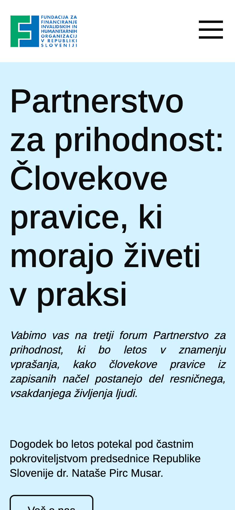
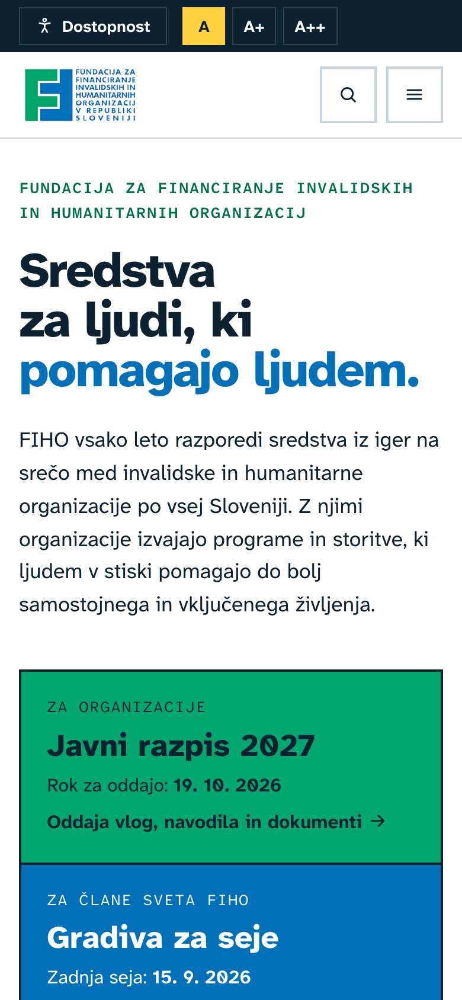
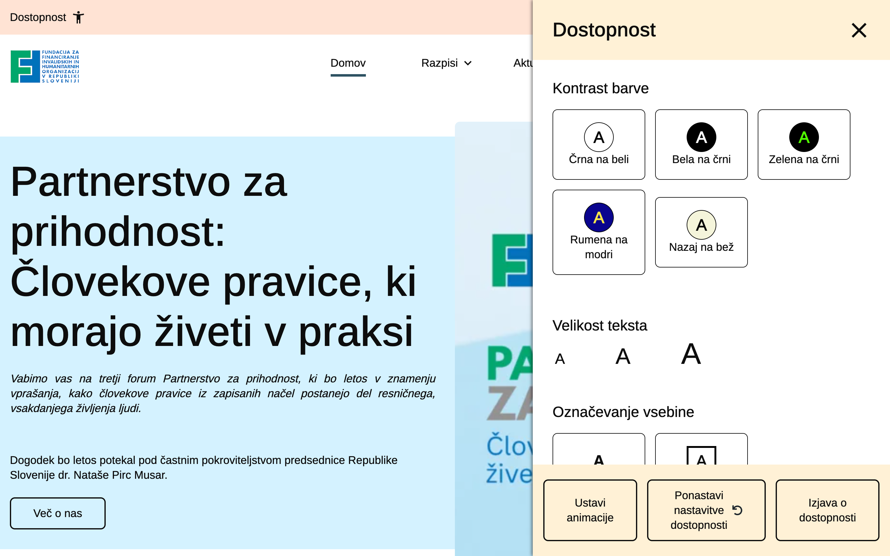
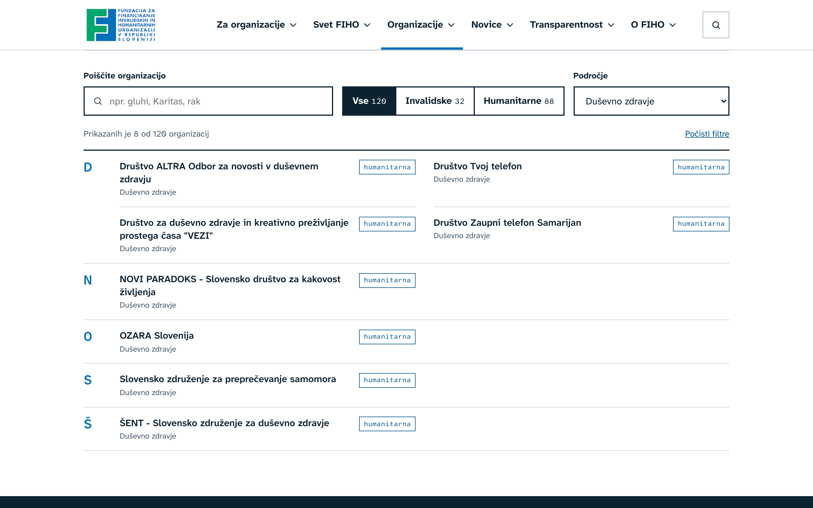
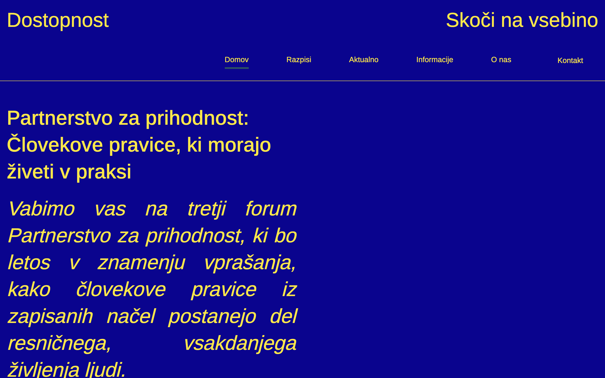
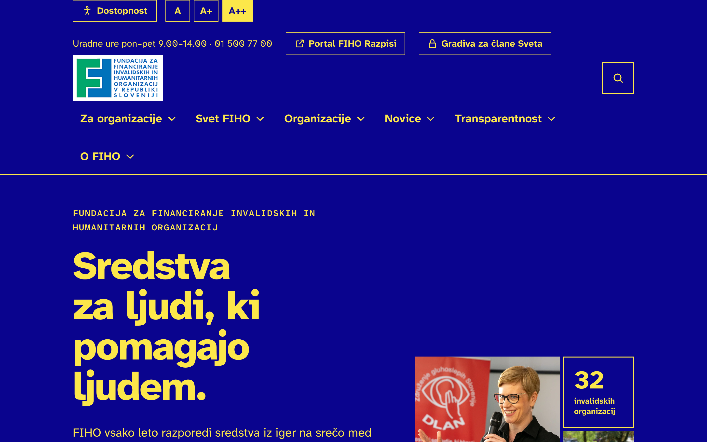

Na prijavni strani ni navodil, kontakta za pomoč ali poti nazaj na fiho.si.
Prenova fiho.si
Analiza Struktura
Vsebine so razporejene po vrsti, ne po potrebah obiskovalcev
Današnji meni
RazpisiJavni razpis 2027 · Pretekli razpisi
AktualnoNovice · FIHO v medijih · Dobre zgodbe
InformacijeAkti in zakonodaja · Katalog informacij javnega značaja · Letna poročila · Javne objave
O nasNaša zgodba · Invalidske in humanitarne organizacije · Organizacija in upravljanje · Podatki o organizaciji · Politika kakovosti (PDF)
Kontaktena stran
NogaSpletni program razpisov · Dostopi do gradiv · Prijava neetičnih ravnanj
»Aktualno« in »Informacije« ne povesta, kaj je v njih.
Seznam 120 organizacij, ki prejemajo sredstva, je pod »O nas«, v dveh zaprtih harmonikah in brez iskanja. Nekatere so navedene samo s kratico (YHD, ILCO, KPŠRD).
Stran nima iskalnika.
Dobre zgodbe so v drsniku, naenkrat je vidna ena od šestih.
»Politika kakovosti« v meniju odpre PDF.
Portal za oddajo vlog in gradiva za Svet nimata stalnega mesta v glavi strani.
Prenova fiho.si
Analiza Mobilni telefon
Na telefonu prvi zaslon zasede en sam naslov

Danes
Naslov dogodka zasede ves prvi zaslon.
Prvi gumb je šele na drugem zaslonu.
Obojestranska poravnava ustvari luknje med besedami.
Naslovnica je dolga 6.700 pik, približno 8 zaslonov.

Predlog
Na prvem zaslonu: kdo je FIHO, razpis in gradiva za Svet.
Meni Dostopnost in velikost pisave sta vedno na vrhu.
Besedilo je levo poravnano, z velikimi razmiki med vrsticami.
Gumbi so dovolj veliki za prst.
Prenova fiho.si
Analiza Vizualna podoba
Barve strani ne izhajajo iz logotipa
Barve ozadij na današnji strani
Breskev#FFE3D4
Svetlo modra#D4F2FF
Krem#FFF1D6
Bež#F5F5DB
Sivo modra#2E5262
Temno modra#092633
Barvi logotipa
Zelena FIHO#00A870 · na strani je ni
Modra FIHO#0070B8 · na strani je ni
Šest barv ozadja, ki se menjajo od sekcije do sekcije, a nobena ni iz logotipa. Stran zato ne deluje kot del iste celostne podobe.
Pisava Arimo je brezplačna različica pisave Arial: nevtralna, a brez značaja.
Slike so v različnih slogih: plakat z besedilom, fotografija prenosnika iz fotobanke, portreti v krogu.
Certifikati se vrtijo v neskončnem traku, isti logotipi se ponavljajo.
Gumbi so ponekod obrobljeni, drugje polni, brez jasnega pravila, kateri je glavni.
Prenova fiho.si
Analiza Meni Dostopnost
Meni Dostopnost: dobra osnova z nekaj napakami
fiho.si · Dostopnost

Deluje
Veliko možnosti: kontrasti, velikost besedila, odebelitev, fokus, kurzor, povečava, ustavitev animacij.
Odpre se s tipkovnico, tipka Esc ga zapre, nastavitve se shranijo.
Popraviti
Pri največji pisavi se naslov zmanjša (68 → 48 px), odstavek zraste na 48 px, meni ostane 18 px.
V barvnih kontrastih izginejo vse slike, tudi logotip in z njim povezava na naslovnico.
Oznake za bralnike zaslona so delno v angleščini (»Open accessibility settings«, »small / medium / big«).
Po zaprtju ostane fokus na skritem gumbu namesto na gumbu »Dostopnost«.
Prenova fiho.si
Analiza Hitri popravki
Napake, ki jih lahko odpravimo takoj
Neodvisno od prenove. Vsaka posebej je majhna, skupaj pa zmanjšujejo zaupanje v stran.
Naslov strani z organizacijami se konča z oklepajem: …/invalidske-in-humanitarne-organizacije]
Svet FIHO: besedilo navaja 23 članov in 3 predstavnike vlade, seznam pa 21 članov in enega predstavnika. Ime »Midhet Huskić« je zapisano na dva načina.
Opis certifikata se glasi »ISO 9011« namesto ISO 9001.
Uradne ure so na kontaktni strani 9–14, na strani razpisa 9–13, brez pojasnila.
Telefon je zapisan kot »+386(01) 500 77 00«; pravilno je +386 1 500 77 00.
Zavihek »Poročila 2020–2024« odpre naslov »Poročila 2020–2025«.
V zgodovini je odstavek za leto 1995 kopiran pod 1998, vnosa za leto 2008 sta podvojena.
Uvod v zgodovino ponovi besedilo vizije.
Na strani s podatki je ime »Fundacija invalidskih in humanitarnih organizacij Slovenije«, ki ni uradno.
Zadnja dobra zgodba (Društvo Tvoj telefon) nima podpisa.
Prenova fiho.si
2
Predlog nove strani
Javni razpis in gradiva za Svet v ospredju, nova struktura, vizualni sistem iz logotipa in klikljiv prototip.
Prenova fiho.si
Predlog Struktura
Razpis in gradiva Sveta sta vedno en klik stran
Vedno na vrhuPortal FIHO RazpisiGradiva za člane SvetaDostopnostIskanje
Za organizacije
Javni razpis 2027rok, koraki, dokumenti
Kako oddati vlogo
Dokumenti in obrazci
Pogosta vprašanja
Izobraževanja
Pretekli razpisi
Svet FIHO
Gradiva za člane Svetavstop s prijavo
Seje in sklepi
Člani Sveta
Nadzorni odbor
Organizacije
Imenik organizacijiskanje in filtri
Dobre zgodbe
Sredstva po letih
Novice
Novice
FIHO v medijih
Partnerstvo za prihodnost
Transparentnost
Letna poročila
Akti in zakonodaja
Javne objave
Katalog informacij javnega značaja
Politika kakovosti
Prijava neetičnih ravnanj
O FIHO
Poslanstvo in vrednote
Zgodovina
Strokovna služba
Podatki o fundaciji
Kontakt
Prenova fiho.si
Predlog Vizualni sistem
Barve iz logotipa, pisava za slabovidne bralce
Zelena FIHO#00A870 · iz logotipa
Modra FIHO#0070B8 · iz logotipa
Črnilo#0D2231 · besedilo
Rumena#FFD23F · roki, stanje
Megla#EEF3F7 · ozadja
Oglati bloki kot v znaku F/H, brez zaobljenih kartic.
Vse kombinacije besedila in ozadja dosegajo kontrast po WCAG 2.2 AA.
Atkinson Hyperlegible Next
Aa Čč Šš Žž
Il1 O0
Podobne črke in številke so jasno različne. Ničla je prečrtana, da je ne zamenjamo s črko O.
Pisavo je za bralce s slabim vidom razvil Braille Institute. Je brezplačna (licenca SIL Open Font License) in podpira vse slovenske znake.
Rok za oddajo: 19. 10. 2026Atkinson Hyperlegible Mono za datume, zneske in oznake
Prenova fiho.si
Predlog Naslovnica
Prej in potem
Danes
fiho.si
Vabilo na dogodek, šest različnih ozadij, pot do razpisa ni vidna.
Predlog
fiho.si
Dva glavna vstopa takoj pod uvodom: javni razpis z rokom in gradiva za Svet.
Prenova fiho.si
Predlog Naslovnica
Naslovnica: najprej razpis in Svet
Kdo je FIHO in dva glavna vstopaJavni razpis 2027 in gradiva za Svet
Javni razpis 2027Stanje, rok, odštevanje in časovnica
Gradiva za člane SvetaVstop, zadnja seja in njeni sklepi
Sredstva za leto 202726,1 mio € in razdelitev, prikazana v merilu
Komu so sredstva namenjenaPodročja s številom organizacij
Dobre zgodbeTri hkrati, s fotografijami in podpisi
Novice in FIHO v medijihZunanje povezave so jasno označene
Zastarelo aplikacijo zamenja sodobna rešitev s podporo in varno prijavo.
Prenova fiho.si
Predlog Kam gredo sredstva
Imenik 120 organizacij z iskanjem
fiho.si/organizacije

Iskanje po imenu, delu imena ali področju, tudi brez šumnikov.
Filter invalidske / humanitarne in izbira področja.
Abecedni seznam s slovenskim vrstnim redom (C, Č, D … S, Š).
Vsaka organizacija lahko dobi svojo stran: opis, kontakt, spletna stran in dobre zgodbe.
Področja so v prototipu določena okvirno. Razvrstitev bi pripravili skupaj s FIHO.
Prenova fiho.si
Predlog Dostopnost
Dostopnost: enake možnosti, brez napak
Danes: največja pisava, rumena na modri
fiho.si

Naslov se zmanjša, meni ostane majhen, logotip in slike izginejo.
Predlog: enaki nastavitvi
fiho.si

Vse se poveča sorazmerno, meni se prelomi v novo vrstico, logotip in slike ostanejo.
FIHO že objavlja izjavo o dostopnosti po ZDSMA. Nova stran naj zahteve izpolnjuje v zasnovi: kontrast po WCAG 2.2 AA, tipkovnica in bralniki zaslona, preizkus z uporabniki iz organizacij.
Prenova fiho.si
Hvala.
Z veseljem odgovorim na vprašanja in predlog prilagodim vašim potrebam.
Klikljiv prototip
Predlog si lahko ogledate v živo
Naslovnico, stran razpisa 2027, gradiva za Svet in imenik organizacij z iskanjem, filtri in nastavitvami dostopnosti z veseljem pokažem na sestanku.